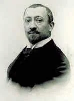
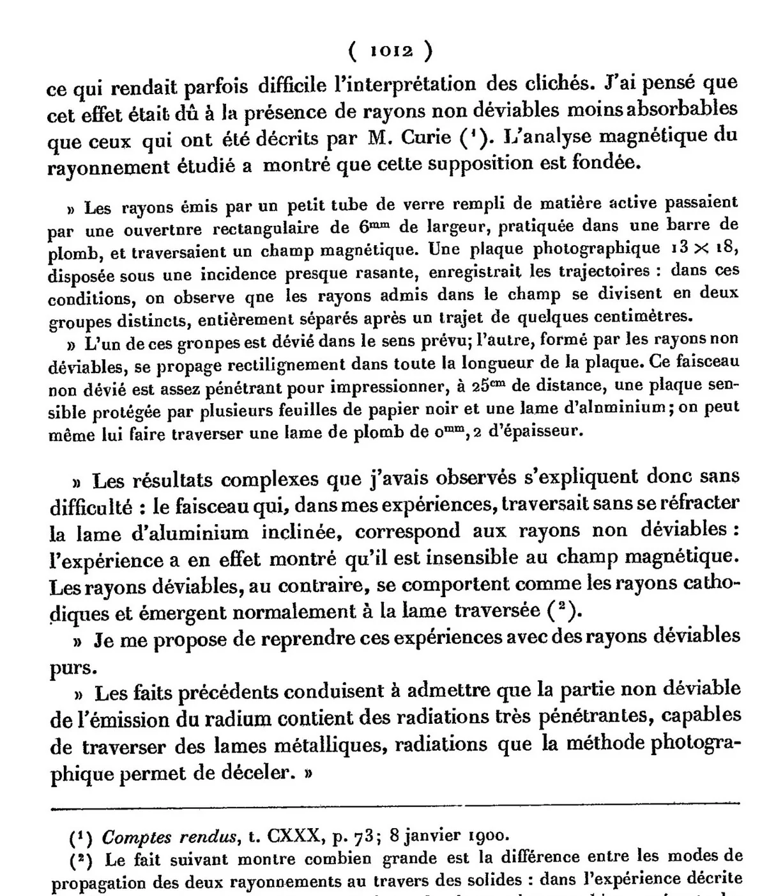
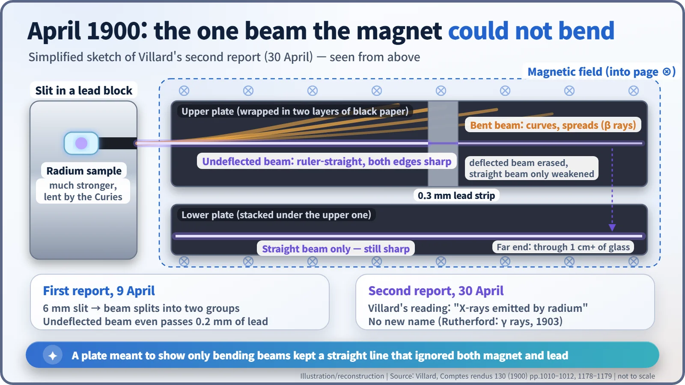
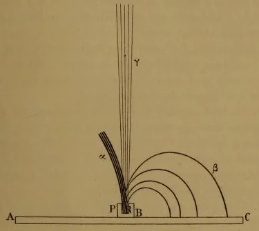
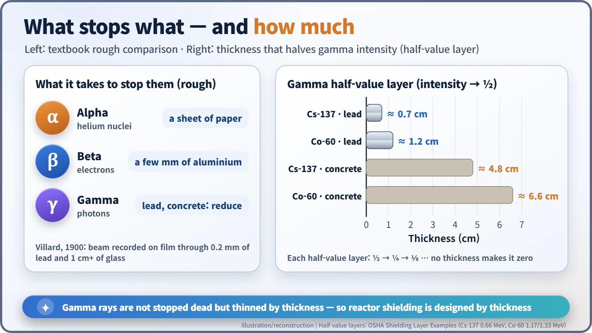

Nuclear History · 010
The Line That Kept Photobombing — Paul Villard Discovers Gamma Rays (1900)
In April 1900 a French chemist chased an annoying straight beam through a magnet and a sheet of lead, and found the most penetrating radiation radium gives off.
In the spring of 1900 Paul Villard kept finding a stubborn straight line on photographic plates that were supposed to show only bending beams. He chased it with a magnet and sheets of lead, and found a radiation far more penetrating than anything radium was known to emit. Rutherford named it gamma rays three years later; we design reactor shielding around it today. [1]
The uninvited guest on the plates
"I almost always observed that a beam travelling in a straight line is superimposed on the refracted beam, which sometimes made the interpretation of the plates difficult."
That grumble (translated here from the French) comes from a note written in the spring of 1900 by Paul Ulrich Villard (1860–1934), who worked in the chemistry laboratory of the École normale supérieure in Paris. He wanted to photograph beams that bend. Plate after plate, an uninvited guest kept elbowing its way into the picture: a line so straight it looked ruled with a ruler. Villard decided to find out who the intruder was. What he found is what we now call gamma rays.

When radiation got its name tags
In 1899 Ernest Rutherford sorted the radiation from uranium into two parts: a component easily stopped by thin aluminium foil, which he called alpha (α), and a more penetrating one, which he called beta (β). Beta rays were soon shown to bend strongly in a magnetic field. They were fast electrons.
Alpha rays were another story. With the magnets of the day, nobody could catch them bending. So the "undeflectable" part of radium's radiation was filed away as the weak, easily absorbed part. That assumption was the trap.
9 April: a straight line that went through lead
Villard was not hunting for new radiation at all. His real topic was how cathode rays (streams of electrons in a vacuum tube) and radium's deflectable rays bounce and bend when they pass thin metal sheets. He put barium chloride containing radium into a thin glass ampoule inside a lead tube, set a 0.3 mm aluminium sheet at 45°, 2–3 mm in front of the opening, blocking half the beam, and let the radiation graze a photographic plate wrapped in two layers of black paper. The bent beam showed up as planned, but a straight beam kept riding on top of it. [1]
So he reached for a magnet. He narrowed the radiation through a 6 mm slit in a lead bar and sent it through a magnetic field, skimming across a 13 × 18 cm plate. Within a few centimetres the beam split cleanly into two groups. One curved away, as expected. The other ran straight to the far edge of the plate. That straight beam blackened a plate 25 cm away that was covered by several sheets of black paper and an aluminium sheet, and it even passed through a lead sheet 0.2 mm thick. The "weak" undeflected radiation turned out to be the opposite of weak.
The result appeared in the proceedings of the French Academy of Sciences for the session of 9 April 1900. His conclusion, in translation: "the undeflectable part of the radium emission contains very penetrating radiations, capable of passing through metal sheets, radiations that the photographic method makes it possible to detect."

30 April: the Curies' radium and two stacked plates
Pierre and Marie Curie then lent Villard a much more active radium sample. This time he stacked two photographic plates, each wrapped in thick black paper, and laid them in the magnetic field. The upper plate recorded two tracks: one bent and spread out, the other fainter but, in his words, "absolutely straight and sharp on both edges." The lower plate showed only the straight beam, and it was just as dark and crisp as on the upper plate, even at the far end, where the rays had crossed more than 1 cm of glass. When he laid a 0.3 mm strip of lead on the upper plate, the bent track vanished under the strip, while the straight one merely grew weaker. [1]

This second note was presented at the Academy's session of 30 April 1900 by Jules Violle. (Some secondary sources misspell the name as "Jules Volle.") Villard called the straight beam "X-rays emitted by radium," comparing it to a Crookes tube, which gives off X-rays alongside its cathode rays. He did not propose a new name.
A name three years later, an identity fourteen years later
In 1903 Rutherford used a powerful magnet to show that even alpha rays bend, like positively charged particles. Ranking the three kinds of radiation by how far they penetrate, he called the third one gamma (γ) rays. A historical survey by Leif Gerward traces the first use of the name to Rutherford in 1903. In his 1908 Nobel lecture Rutherford put it simply: "when a still more penetrating type of radiation from radium was discovered by Villard, the term γ-rays was applied to them." [2] [3]
Also in 1903, Marie Curie's doctoral thesis carried the famous sketch of three tracks fanning out in a magnetic field, the ancestor of every textbook diagram since. But be careful with that picture: Villard's plates of 1900 showed only two tracks, the bent one and the straight one.

In 1914 Rutherford and Edward Andrade reflected gamma rays off a crystal and showed they were electromagnetic waves with a shorter wavelength than X-rays. Villard's instinct had been right. Today the two are told apart by birthplace rather than energy, since their energy ranges overlap: radiation from an excited atomic nucleus is a gamma ray; radiation from electrons is an X-ray.
Why gamma rays matter in nuclear energy
Gamma rays carry no charge, so magnets cannot steer them, and they travel a long way through matter. There is no thickness at which they stop dead. Instead, each fixed thickness cuts their intensity in half. That thickness is the half-value layer. Stack layer after layer and the intensity drops to a half, a quarter, an eighth, but never to zero. [6]
| Gamma source | Half-value layer in lead | Half-value layer in concrete |
|---|---|---|
| Cobalt-60 (1.17 and 1.33 MeV) | about 1.2 cm | about 6.6 cm |
| Caesium-137 (0.66 MeV) | about 0.7 cm | about 4.8 cm |
That is why reactors are wrapped in thick concrete shielding, and why shielding is designed by thickness.

Villard went on to propose, in 1908, a unit for measuring X-rays by the ionization they produce in air, a forerunner of the roentgen unit adopted internationally in 1928. The same year he was elected to the Academy of Sciences. His 1934 eulogy at the Academy remembered that he "almost always worked alone" and was not very communicative (again a translation). The stubbornness that made him chase one annoying line across his plates ended up writing the first page of every reactor shielding manual. [4] [5]
Timeline
| Date | Event |
|---|---|
| 24 Feb 1896 | Henri Becquerel reports radiation from uranium salts |
| Jan 1899 | Rutherford distinguishes alpha and beta rays |
| 9 Apr 1900 | Villard's first note: an undeflected, penetrating beam that passes 0.2 mm of lead |
| 30 Apr 1900 | Villard's second note: stacked-plate experiment, "X-rays emitted by radium" |
| 1903 | Rutherford shows alpha rays bend in a magnetic field and names gamma rays |
| 1908 | Villard proposes an ionization unit and joins the Academy of Sciences |
| 1914 | Rutherford and Andrade show gamma rays are electromagnetic waves |